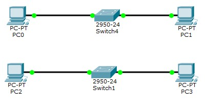

Задачи:
Настройка коммутаторов и маршрутизаторов.
Отчет по лабораторной работе
Цель лабораторной работы: ознакомиться с принципами работы компьютерных сетей, базовой настройкой сетевого оборудования и статической маршрутизацией.
Исходные данные:
| LAN A | LAN B | LAN C |
|---|
| Количество хостов в сети | 5 | 965 | 1024 |
| Маска | /29 | /22 | /21 |
| Subnet | 192.168.2.0 | 172.16.0.0 | 10.10.0.0 |
| IP адрес первого хоста: | 192.168.2.1 | 172.16.0.1 | 10.10.0.1 |
| IP адрес последнего хоста | 192.168.2.6 | 172.16.3.254 | 10.10.7.254 |
| Broadcast | 192.168.2.7 | 172.16.3.255 | 10.10.7.255 |
- Разместить на рабочем поле коммутатор и два компьютера и соединить их

- Настроить адресацию на добавленных компьютерах
PC0:
PC1:
- Выполнить проверку работоспособности сети
- Добавить на рабочее поле еще один коммутатор с двумя компьютерами и настроить адресацию из другой подсети

PC2:
PC3:
- Соединить коммутаторы между собой и проверить работоспособность сети
- В случае неработоспособности сети объяснить причины
В сети А и сети B разная адресация, поэтому необходимо использовать маршрутизатор - устройство, предназначенное для объединения сегментов сети.
- Добавить маршрутизатор на рабочее поле

- Настроить интерфейсы маршрутизатора для существующих подсетей

- Проверить работоспособность сети
- В случае неработоспособности сети объяснить причины
На компьютерах одной сети отсутствует информация о маршрутах к другой сети, поэтому необходимо указать шлюз по умолчанию.
- Указать шлюз по умолчанию и отправить сообщение
- Добавить на рабочее поле еще один маршрутизатор
- Подключить к нему коммутатор и компьютер
- Настроить сетевые настройки согласно таблице ниже
- Соединить между маршрутизаторы и настроить между ними сеть с префиксом /30

- Проверить работоспособность сети, отправив сообщение сети A в сеть С и из сети В в сеть С
- В случае неработоспособности сети объяснить причины
На маршрутизаторах не настроена статическая маршрутизация.
- Настроить статическую маршрутизацию между сетями
От Router1 к Lan C:
От Router0 к Lan A, от Router0 к Lan B:
- Настроить на сетевых устройствах пароли для привилегированного режима
enable password mypassword
- Настроить пароли на сетевых устройствах пароли на подключение через консоль и telnet
Пароль на подключение через консоль
Пароль на подключение через telnet:
- Установить баннер на сетевое оборудование

- Проверить работу удаленного подключения